4.1.32. Pion: SPEX photoionised plasma model¶
The pion model calculates the transmission and emission of a slab of
photo-ionized plasma, where all ionic column densities are linked
through a photoionisation model. The relevant parameter is the
ionization parameter  , with
, with
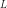
the source luminosity, the hydrogen density and
the hydrogen density and  the distance
from the ionizing source. The major difference is that while for the
xabs model (Xabs: photoionised absorption model) the photoionisation equilibrium is pre-calculated for a
grid of
the distance
from the ionizing source. The major difference is that while for the
xabs model (Xabs: photoionised absorption model) the photoionisation equilibrium is pre-calculated for a
grid of  -values by an external code, for instance
Cloudy or XSTAR
(or even with the present pion model
-values by an external code, for instance
Cloudy or XSTAR
(or even with the present pion model  ), in the
present pion model the photoionisation equilibrium is calculated
self-consistently using the available plasma routines of SPEX.
), in the
present pion model the photoionisation equilibrium is calculated
self-consistently using the available plasma routines of SPEX.
Warning
The default energy grid in SPEX has 8192 bins between
0.001 and 100 keV. This may not be sufficient for the pion model when
you use it without data. Recommended is a logarithmic grid between
 keV with a step size of 0.005. You can get this
by issuing the following command: ”Egrid log 1E-6 : 1E6 step 0.005 keV”.
Note that if you have read in data, SPEX automatically uses the resolution
of the response matrix within its energy range and expands the
total energy grid to keV.
keV with a step size of 0.005. You can get this
by issuing the following command: ”Egrid log 1E-6 : 1E6 step 0.005 keV”.
Note that if you have read in data, SPEX automatically uses the resolution
of the response matrix within its energy range and expands the
total energy grid to keV.
Warning
This model is still under development and not all atomic data is fully updated. For instance, no cooling by collisional excitation for ions of the K- to Zn-isoelectronic sequences is taken into account yet. So use with care!
Warning
When setting up the model, be aware that the pion model is
both additive and multiplicative (even if you put the emission to zero).
Therefore, the pion model needs the same com rel sequence as you use for
your absorption component. Example: com pow — com reds — com
pion — com rel 1 3,2 (a powerlaw that powers a pion model and is then redshifted)
needs as next command com rel 3 2, telling SPEX that the pion emission
model is also redshifted.
Warning
Please note that all PION components must be multiplied by at least one continuum component (using the usual comp rel command). Otherwise, photoionisation cannot be calculated and SPEX may crash. A typical AGN SED spanning optical to X-ray energies can be set up with three continuum components in SPEX: pow (primary hard X-ray power-law emission), refl (reflected power-law emission), comt (thermal optical/UV disk continuum + the soft X-ray excess). See the SED of NGC 5548 derived in Mehdipour et al. (2015).
Warning
Starting from SPEX Version 3.06, we have updated the cooling due to collisional excitation (work performed by Stofanova et al., 2021, submitted). In addition, starting from SPEX Version 3.06.01, we have improved the collisional excitation rates of neutral hydrogen; the latter affects both emitted H I spectra, and the total cooling rate at the lower temperatures (few eV). That cooling rate may differ at some temperatures by a factor of 3-4. Therefore results obtained with the most recent version will differ from those of version 3.05 and earlier.
Warning
When using the pion model with the ion mute/unmute option in order to hide or show the contributions from specific ions to the total spectrum, you will get a different solution, because it affects the heating and cooling rates (muted ions will not contribute to the heating and cooling in the calculations), and thus the ionisation balance (equilibrium temperature) will change. Exception is when you use the tmod=1 option for pion, which forces the temperature to be equal to what you prescribe through parameter tinp. For diagnosing the heating/cooling contributions of ions or elements, it is therefore recommended to run first the model with all ions, make an ascii-output of the plasma parameters, take the temperature from there as the “tinp” parameter for the pion model, and set tmod=1. You can play then with the mute/unmute command.
The main advantage, however, of the pion model is that the user can define his own ionising continuum by combining any additive components of SPEX, and that ionising spectrum is fed through the pion component to get the transmitted spectrum. In addition, multiple pion components can be used, with the light leaking from one layer to the next. And it allows for spectral fitting, where the parameters of the ionising continuum are determined simultaneously with the parameters of the absorbing layer. The number of parameters is therefore unlimited (well, the memory and cpu speed of the computer will be the true limiting factors).
Prior to fitting a PION component, it is best to first calculate the model spectrum with your initial parameter values (see Calculate: evaluate the spectrum). This helps to see if the initial values are reasonable numbers and the model is not too far off the data.
4.1.32.1. Emission from the pion model¶
We have now incorporated a first version of emission from the same layer. We cannot give you any guarantee at the moment that it is bug-free. We know at the moment that the source has problems when the density gets too high; this is different for each ion; so unless you limit the density in fitting, SPEX may encounter a situation where you surpass the critical density and you may get a warning message. Here is an example. For a photoionised case, with
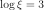
(resulting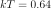
keV) the nominal occupation of the ground state of H becomes negative for a density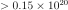
 . This can be traced down to
incomplete atomic data. For H, we include collisional excitation and
de-excitation up to principal quantum number
. This can be traced down to
incomplete atomic data. For H, we include collisional excitation and
de-excitation up to principal quantum number 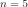
but not above. As a result, in this example the 1s–5s levels are mainly populated/depopulated by collisions, while 6s–16s are mainly populated by radiative recombination and depopulated by radiative cascades downward or photon absorption. The nominal occupation of 1s–5s then decreases from 0.035 (1s) to 0.0024 (5s), while for 6s–16s they increase slowly from 0.020 to 0.027. This is of course physically unacceptable. It causes the lower levels to leak to the higher levels, with eventually the catastrophe of negative occupation for the ground state. We mitigate this by replacing the level populations by the LTE populations and issueing a warning. Without this mitigation, SPEX would crash.Warning
You can get the emission by putting the covering factor (omeg) to a non-zero value; it will slow down the calculations compared to absorption-only calculations, so be aware.
Normally, to calculate the emission from a full thin shell surrounding an ionising source, you should set the parameter omeg to unity (a full shell of 4
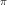
steradians). Smaller factors could be associated e.g. to ionisation cones; values larger than unity make physically no sense but you can formally play around with it (for very large values, the emitted spectrum would start dominating the absorbed primary continuum, but if you want to suppress the primary continuum in the observed spectrum, it is better to define your model like the example below as:SPEX> com pow
SPEX> com pion
SPEX> com etau
SPEX> com rel 1 2,3
SPEX> com rel 2 0
SPEX> par 3 tau v 1e10
SPEX> par 3 a v 0
In this example, the powerlaw goes through the pion component and is killed afterwards by the etau component (Etau: simple transmission model), while the emission from the pion component is not attenuated by etau.
You can vary the new parameter mix to get a different ratio of forwards to backwards emission. Putting it to 1 (default) means you get the forward emission, putting it to 0 the backwards emission, and intermediate values give you a mix.
Warning
The emission model uses currently only one layer. When the continuum optical depth of the absorbed continuum, weighted with the incoming flux, becomes of order unity, the layer will become inhomogeneous in terms of temperature structure, and our single-layer approximation will break down.
In order to make a pion component produce emission only, fix the
covering fraction (fc) parameter to zero so that no absorption is
produced. Then fit the omega parameter. Note that any pion component
with a non-zero omega acts as an additive component in SPEX. Therefore,
multiply these components with your multiplicative components (like the
Galactic absorption) using the comp rel command.
For more information on this model, the atomic data and parameters we refer to Different types of absorption models.
4.1.32.2. More options¶
4.1.32.2.1. No energy balance solution needed¶
The default option (tmod=0) for the pion model is to solve simultaneously for the ionisation balance and the energy balance equations. This option is useful for e.g. photoionised winds of AGN or X-ray binaries.
However, there are situations where photo-ionisation or photo-excitation play a role but do not determine the thermal structure. Examples are winds of hot stars, where shocks heat the wind but UV radiation from the star can affect He-like triplet line emission ratios. Another example are the most teneous parts of the WHIM, where photoionisation by the cosmic background can be important compared to collisional ionisations.
For such cases, the user can set the parameter tmod=1; in that case, the user should also provide the temperature tinp of the plasma. In this case, only the ionisation balance equation is solved, and there is in general no energy balance (this can be checked by using the ascii-output option heat, Ascdump: ascii output of plasma and spectral properties). Do not forget to set the parameter omeg to a finite value (the default is zero), otherwise the emitted spectrum is zero.
4.1.32.2.2. External heat sources¶
In some cases there may be an other external heat or cooling source,
like shock heating, magnetic reconnection, adiabatic expansion etc. If
one wishes to solve for the photoionisation equilibrium, then this
additional heat source can be used by putting the parameter exth to
the proper value (units: W . A negative value would mean
a cooling contribution.
4.1.32.2.3. Multiple solutions¶
There are situations where there is not a unique solution to the energy balance equations. A simple example can be obtained as follows: take a logarithmic energy grid between
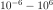
keV, use a powerlaw with photon index 1.5, apply the pion model to it and put exth to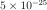
W. In this case there are 3
solutions. SPEX chooses by default the hottest solution. You can see all
solutions by putting the parameter fmod=1 and using the heat ascii
output option. Or check the behaviour of the heating balance by issuing
the ebal ascii output option (Ascdump: ascii output of plasma and spectral properties). You can select which solution you want
to use in SPEX by setting the soln parameter. Default is 0 (hottest
solution), and for the above case of 3 solutions values of 1, 2 and 3
renders you the coldest, second ant hottest solution. Test this with the
heat or plas output options.
Warning
When you set soln to a non-zero value, use fmod=1, otherwise SPEX may crash.
4.1.32.2.4. No equilibrium solution¶
There are also situations where there is no equilibrium solution to the energy balance equations. This may happen for instance if you put so much heat in the plasma that it cannot be balanced anymore by cooling. Another example is a too hard powerlaw without high energy cut-off, where Compton-heating might be very strong. In this case SPEX renders an error message, and you cannot trust the result of the calculation anymore. The only remedy is to adjust your model parameters or the allowed range for them in case of spectral fitting or error searches.
4.1.32.2.5. Adiabatic cooling¶
The effects of adiabatic cooling can be taken into account by setting the parameter tadi. This represents the adiabatic cooling time
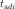
. The associated cooling rate is calculated as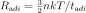
, where is
the total particle density (electrons and ions). The default setting is
such that this process can be neglected. If the user takes this process
into account, it should be verified afterwards that the physical
conditions for adiabatic cooling are met, i.e. energy losses by
radiation or heat conduction must be small compared with those by the
adiabatic expansion. Check this for example by running the asc ter
... heat output.
4.1.32.2.6. Radiative acceleration¶
The radiative acceleration caused by the absorption or scattering of the incoming radiation on the layer is calculated, and given as output parameter acc. Physically, it is given by the following equation, which can be easily derived:
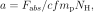
where
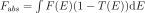
is the absorbed flux (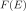
is the incoming flux in W keV and
keV and
 the transmission of the layer),
the transmission of the layer), 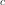
the speed of light,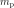
the proton mass, the hydrogen
column density and
the hydrogen
column density and 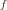
is a dimension less quantity determined from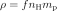
with the
hydrogen density and
the
hydrogen density and 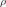
the mass density (kg)
of the plasma, for example 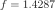
for the present default abundances of SPEX (you can check this number from theasc ter
... plas ascii output option).
Warning
It is important to note that the acceleration is proportional to the hydrogen density,
so take care to choose the appropriate hydrogen density, even in the low density limit where the
spectral shape does not depend on the density. This counter-intuitive behaviour is caused by the
use of as main parameter. Given the absolute ionising luminosity of the ionising
source, and the value of and provided by the user,
the pion model then calculates the distance from the equation .
Thus, higher density yields smaller distance, hence larger absorbed flux by the gas layer, hence
stronger acceleration.
4.1.32.2.7. Partial covering¶
By default, SPEX applies a constant covering fraction of the absorber
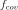
. An energy-dependent partial covering can be introduced by setting the parameters , ,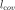
,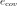
, and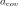
.The type of covering can be set by the parameter . When is set to 3 or 4, the absorber can have a partical covering as a function of energy. If is 3, the actual covering factor
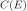
is calculated by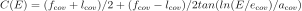
where the covering factor is increasing with energy from to , with a transition at and the width of . Instead, if is 4, the covering factor will decrease with energy,
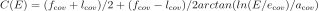
The same form is applied to all absorption models.
4.1.32.2.8. Magnetic field, Landau levels, and Zeeman effect¶
Landau levels are quantized energy levels of electrons moving in a uniform magnetic field. The energy spacing between adajecent Landau levels is
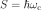
where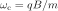
is the cyclotron frequency. SPEX can calculate the free-bound emission from a (partial) quantizied electron field, where the original free-bound continuum is modified by a waveform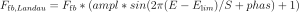
where
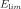
is the Rydberg limit. The Landau levels are only applied when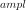
and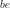
are positive. The same setting is available in the RRC model.While Landau splitting is an electronic effect, the Zeeman splitting and broadening is an ionic feature. When
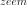
is set to 1, and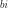
is positive, the classical Zeeman levels are calculated as a function of the field strength. It affects the emission lines in the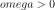
mode.Warning
Inclusion of Zeeman effect significantly slows down the calculation.
4.1.32.3. Model parameters¶
The parameters of the model are:
- nh:
Hydrogen column density in
 .
Default value:
.
Default value:  (corresponding to
(corresponding to
 , a typical value at low Galactic
latitudes).
, a typical value at low Galactic
latitudes).- xi:
the
 of the ionisation parameter
in units of
of the ionisation parameter
in units of  W m. Default value: 1.
W m. Default value: 1.- u:
the Davidson (Cloudy) ionisation parameter
 (dimensionless). This is calculated from the SED and the value of
. Not fittable, just output.
(dimensionless). This is calculated from the SED and the value of
. Not fittable, just output.- hden:
the hydrogen density in units of
 .
Default value:
.
Default value:  (corresponding to
(corresponding to
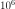
, to be consistent with the order of magnitude of the
electron density (which is used in the cie and neij models; do NOT confuse both quantities!).
The following parameters are common to all our absorption models:
- icov:
Type of the covering fraction. Default value: 2 (constant, set by fcov). If icov=1, full covering is applied. If icov=3, covering fraction follows a tangent function that increases with energy. If icov=4, covering fraction follows an inverse tangent function that decreases with energy. See description above.
- fcov:
The covering factor of the absorber if icov=2. Default value: 1 (full covering). If icov=3 or 4, it sets the covering factor at the high energy end.
- lcov:
The covering factor of the absorber at the low energy end. Default value: 1. lcov is applied only when icov=3 or 4. See description above.
- ecov:
The energy when the covering factor changes from lcov to fcov. Only applied if icov=3 or 4.
- acov:
The width of the transit on covering factor. Only applied if icov=3 or 4.
- v:
Root mean square velocity

- zv:
Average systematic velocity
 of the absorber (using relativistic Doppler shift)
of the absorber (using relativistic Doppler shift)
The following parameters are the same as for the cie-model (see there for a description):
- ref:
Reference element
- 01…28:
Abundances of H to Ni; only here we take H, He, C, N, O, Ne, Na, Mg, Al, Si, S, Ar, Ca, Fe, Ni.
- file:
File name for the electron distribution (in case of a sum of Maxwellians distribution)
The following parameters are unique for the pion model:
- type:
If type equals 0 (default value), it uses
as its main
parameter; if type equals 1, it uses lixi (see next parameter) as its
main parameter- lixi:
Optional alternative ionisation parameter, defines as
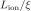
in units of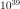
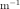
. This is useful for time-variable spectra where has been determined from
one spectrum and where one wants to calculated the transmitted
spectrum for fixed 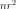
for a different ionising spectrum; in that case lixi can be kept constant.- omeg:
Covering factor
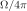
, needed for emission. At this stage, keep it to zero, please.- mix:
Fraction of emitted spectrum to the forward direction relative to the total. default value: 1 (all emission forward). A value of 0 means SPEX gives all backwards emission.
- exth:
External heating in W
. default value: 0.- fmod:
Show all solutions in ascii output of the heating (fmod=1). Default is fmod=0. Set fmod=1 also when you set soln
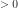
.- soln:
The temperature solution to be used, from low to high values. Default value is 0 (hottest solution). If this parameter is larger than the hootest solution, it adopts the hottest solution instead. Should be used with fmod=1 in case soln.
- tmod:
Temperature mode. Default value: 0 (solve for the temperature that provides energy balance). If tmod=1, use tinp instead as temperature and do not solve for energy balance. The ionization balance is then determined with both tinp and the photon field. If tmod=2, use tinp as temperature for both energy balance and ion concentration.
- tinp:
Temperature of the plasma in keV. Default: 1 keV. Only relevant if tmod=1 and 2.
- tadi:
Adiabatic cooling time scale (s). See description above. Default value:
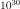
s.- acc:
Radiative acceleration. See description above. Note: only output.
- be:
Magnetic field strength that sets the Landau levels of the free electron. Only affect the radiative recombination continuum in the emission mode. See description above.
- phas:
Phase of the waveform by the Landau levels of the free electron field. Only affect the radiative recombination continuum in the emission mode. See description above.
- ampl:
Amplitude of the waveform by the Landau levels of the free electron field. Only affect the radiative recombination continuum in the emission mode. See description above.
- zeem:
Zeeman calculation mode. Default value: 0 (no Zeeman). If zeem=1, Zeeman effect is calculated for the emission lines. See description above.
- bi:
Magnetic field strength that sets the Zeeman effect of ions in their line emission. Only affect the emission mode. See description above.
Recommended citation: Mehdipour et al. (2016) and Miller et al. (2015)